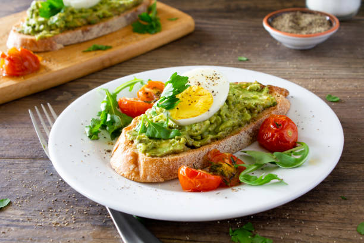

Ingredient Chili
Our grandfather was a preacher, so when we were growing up, the whole family would often join the community for all-day church singing and dinner on the grounds. There was almost always a table covered with food, including bowls of coleslaw. Each one tasted different, because every cook used their own special ingredient. This is ours, and it is full of colors—purple and green and red. It's got everything!
Ingredients
- 1 pound lean ground beef
- 15 ounces tomato sauce
- 1 (15 ounce) can kidney beans, drained
- 1 (15 ounce) can chili beans, not drained
Steps
-
Heat a large skillet over medium-high heat. Cook and stir ground beef in the hot skillet until browned and crumbly, 5 to 7 minutes.
-
Stir in kidney beans, chili beans, and tomato sauce. Bring to a boil and stir in chili powder. Reduce heat to a simmer, and cook, stirring occasionally, until thickened, about 15 minutes. Season to taste with salt and pepper.